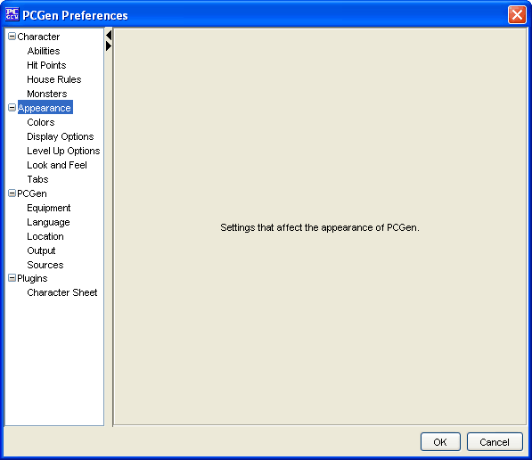

Appearance Menu Options

The
Appearance
options allow the user to select
different types of options that change the way PCGen appears when
the application is loaded.
It can be used to adjust the:
-
The
Colors
of items in lists.
-
The
Display Options
for the PCGen user
interface.
-
The
Level Up Options
to automatically appear
during character creation or modification.
-
The
Look and Feel
of PCGen.
-
The
Tabs
positioning and labeling.